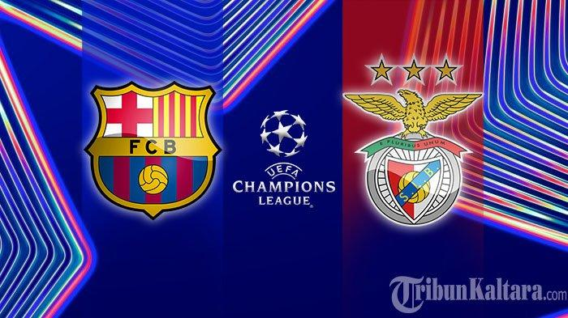

Barcelona Vs Benfica UCL leg 1
Barcelona menang tipis 1-0 di kandang benfica melalui Baca selengkapnya...
Barcelona menang tipis 1-0 di kandang benfica melalui Baca selengkapnya...
Barcelona membawa keunggulan agregat 1-0 pada leg pertama di markas Benfica Baca selengkapnya...

Ancelotti memperingatkan bahwa Real Madrid harus bangkit saat Baca selengkapnya...